Information about all kinds of things
If we want to use our current work as efficiently as possible in the future, we should avoid decisions that close the doors to the future. But, it is almost impossible to know in advance what things we will need in the future, what features are related to things and how things are related to each other.
The open information model of things offers a standardized way to describe things, the properties of things and the connections between things. The data model is based on the idea that a simple structure is the only way to describe unlimited options. In the same way that genes contain the building instructions for all organic things, IMoT contains a description of the implemented solution. IMoT consists of a combination of three basic structures.
- Things
- Features of things
- Hierarchies of things

Thing
Information systems do not only consist of code, but systems include people, buildings, definitions, processes, organizations, marketing, products, etc. The information model of such a set cannot have structures that exist only within a certain subset. All structures related to specific things must be removed from the information model.
In the data model of things, the basic unit is the thing. The thing can be almost anything, but each thing is its own individual. This means that each thing must be able to be individualized. Normally things has name also. In the data model of things, things only have two attributes, name and UUID.
<thing name="Root Level Thing" thinguuid="e8bb1f99-4c65-482a-957c-f4752c9fc22a">
UUID
A universally unique identifier (UUID) is a 128-bit label used for information in computer systems. The term globally unique identifier (GUID) is also used.
When generated according to the standard methods, UUIDs are, for practical purposes, unique. Their uniqueness does not depend on a central registration authority or coordination between the parties generating them, unlike most other numbering schemes. While the probability that a UUID will be duplicated is not zero, it is generally considered close enough to zero to be negligible.[2][3]
Thus, anyone can create a UUID and use it to identify something with near certainty that the identifier does not duplicate one that has already been, or will be, created to identify something else. Information labeled with UUIDs by independent parties can therefore be later combined into a single database or transmitted on the same channel, with a negligible probability of duplication.
Universally unique identifier
Feature
In the open information model of things, each thing must have a name and a uuid. In addition to this, a thing can have an unlimited number of features. The features can be of very different types, such as the length of the pen, the ip address of the rest interface, the location of the sensor in the room, etc. Each feature has a name, a value and a type of value.
The name is needed so we can process the correct feature. The value of the feature can be empty in the information model, but then the value will probably be changed in the program. This kind of feature-value is dynamic information and the information explaining the value can be found in the feature-type. For example, a temperature sensor can send over tcp/ip protocol four bytes of data. The receiver knows that it is a float number, because the necessary information can be found in the data model (in the features of the thing).
<feature name="ThingType" type="text" value="ContentTag"/>
<feature name="Value" type="int8" value=""/>
<feature name="Endianness" type="text" value="BIG"/>
<feature name="StartByte" type="uint64" value="5"/>
<feature name="Length" type="uint64" value="1"/>
<feature name="Bit" type="int16" value="0"/>
Hierarchy
When handling with things, you also need to know the connections between different things. For example, one thing can explain the value to be transferred, another thing explains the block formed by several values, Third thing explains the query interface, etc. On the other hand, the same transferable value can be part of the building's hierarchy. The value of the temperature sensor is part of the temperature sensor, which is part of the room, which is part of the building, etc.
The open information model of things has the concept of hierarchy, which allows things to be connected to different structures. Each hierarchy level has a name, a hierarchy uuid, a parent uuid, a thing uuid, and an order. The Hierarchy uuid is the same kind of uuid as the uuid of thing. It is a universally unique value, which enables hierarchy structures to be transferred from one system to another. The Parent uuid refers to the hierarchy uuid, which means that each hierarchy level can have an unlimited number of children. Each hierarchy level has one parent only. A thing can be connected to the hierarchy level by defining the hierarchy's thing uuid. Because the same thing can be connected to several hierarchies, it is possible to have several different perspectives to same thing. One perspective can be the software configuration perspective, another can be the maintenance perspective, the third can be the research report perspective, etc. Hierarchies on the same level can be placed in different orders. In this way it is possible to execute different things in specific order.
<hierarchy name="Root Level Hierarchy" hierarchyuuid="80f64b43-fdfc-45cc-9b61-d2587aa757b3" parentuuid="00000000-0000-0000-0000-000000000000" thinguuid="e8bb1f99-4c65-482a-957c-f4752c9fc22a" order="0"/>
Example
XML
<?xml version="1.0" encoding="UTF-8"?>
<imot>
<hierarchies>
<hierarchy name="Root Level Hierarchy" hierarchyuuid="80f64b43-fdfc-45cc-9b61-d2587aa757b3" parentuuid="00000000-0000-0000-0000-000000000000" thinguuid="e8bb1f99-4c65-482a-957c-f4752c9fc22a" order="0"/>
<hierarchy name="Example Hierarchy 1" hierarchyuuid="309b6e78-8ee5-47b9-b01f-a6b3dd1325c1" parentuuid="80f64b43-fdfc-45cc-9b61-d2587aa757b3" thinguuid="b498cf67-7035-4fe9-b746-707a5e146bc5" order="0"/>
<hierarchy name="Example Connection Node Hierarchy" hierarchyuuid="994571c4-f251-4e2e-b646-e85009e0ccfb" parentuuid="80f64b43-fdfc-45cc-9b61-d2587aa757b3" thinguuid="779515c8-17dd-4c23-af66-fea2d4f59f3c" order="1"/>
</hierarchies>
<things>
<thing name="Root Level Thing" thinguuid="e8bb1f99-4c65-482a-957c-f4752c9fc22a">
<feature name="ThingType" type="text" value="ExampleRootLevelThing"/>
</thing>
<thing name="Example Thing 1" thinguuid="b498cf67-7035-4fe9-b746-707a5e146bc5">
<feature name="ThingType" type="text" value="ExampleThing"/>
<feature name="Version" type="text" value="0.1"/>
</thing>
<thing name="Example Connection Node Thing" thinguuid="779515c8-17dd-4c23-af66-fea2d4f59f3c">
<feature name="ThingType" type="text" value="ConnectionNode"/>
<feature name="IPAddress" type="text" value="192.168.1.2"/>
<feature name="LoggingFrequency" type="uint64" value="5000"/>
</thing>
</things>
</imot>